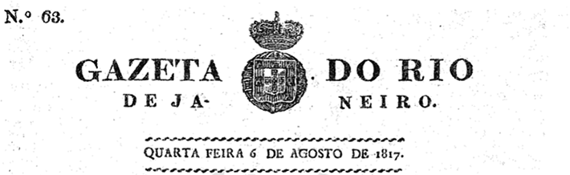

DAVID, Jacques-Louis. A coroação de Napoleão [detalhe], 1806-1807. Óleo sobre tela. 621 × 979 cm. Museu do Louvre, Paris, França.
Museu do Louvre, Paris
A maneira como pensamos a política mundial começou a se constituir durante o século XIX, quando se formaram as nações modernas. Os princípios que norteiam a maioria dos atuais países do Ocidente e alguns do Oriente foram estabelecidos a partir das revoluções ocorridas no final do século XVIII e início do século XIX. Os conceitos iluministas e as revoluções nos Estados Unidos e na França forneceram as estruturas básicas dos países atuais.
O presente capítulo analisa os desdobramentos imediatos à Revolução Francesa: a formação do Império Napoleônico, a onda conservadora que se estabeleceu na Europa a partir do Congresso de Viena e os reflexos desses movimentos nas independências latino-americanas.
A imagem da abertura é um detalhe da obra A Coroação de Napoleão , de Jacques-Louis David (1748--1825), pintor oficial do Império Napoleônico. O quadro nos dá uma dimensão do objetivo de Bonaparte em se colocar como um dos grandes protagonistas da história: na cena, ele próprio coroa sua esposa Josefina, ato que apenas as autoridades eclesiásticas realizavam até então.
- A Revolução Francesa promoveu mudanças efetivas na sociedade francesa?
- De que forma os acontecimentos na Europa afetavam a América? É possível estabelecer relações entre os acontecimentos na Europa e nos territórios coloniais na América.
Neste capítulo serão abordadas as habilidades EM13CHS101 , EM13CHS603 .
O Império Napoleônico
Em 1799, Napoleão Bonaparte liderou um golpe militar conhecido como 18 de Brumário. Com isso, ele depôs o Diretório e tomou o poder na França. Então, o Consulado foi estabelecido, e ele se tornou primeiro cônsul; em 1802, ele foi proclamado cônsul vitalício.
Napoleão Bonaparte conseguiu restabelecer a paz por meio de vitórias militares e negociações diplomáticas, neutralizando os adversários. Um dos aspectos de maior destaque do governo foi o acordo de paz assinado em 1802 com a Inglaterra, que pôs fim ao conflito iniciado em 1793. Essa decisão aumentou o prestígio de Napoleão na França e, em 1804, ele foi autorizado, por meio de um plebiscito, a assumir o título de imperador dos franceses.
O Consulado era formado, a princípio por três cônsules: Roger Ducos, Emmanuel Joseph Sieyès e Napoleão Bonaparte. Os dois primeiros foram rapidamente substituídos por Jean-Jacques Régis de Cambacérès e Charles-François Lebrun. Porém, na prática, Napoleão governava a França de forma autoritária, conservadora e centralizada.
A paz assinada com a Inglaterra durou pouco. Em 1803, a Inglaterra aliou-se à Rússia e à Áustria para combater a França. Dois anos depois, Napoleão organizou uma grande expedição para invadir o território inglês, mas as forças navais combinadas da França e da Espanha foram derrotadas na Batalha de Trafalgar. Em terra, no entanto, o exército francês derrotou as forças russas e austríacas na Batalha de Austerlitz, em 1806.
A cerimônia de coroação de Napoleão como imperador já dava indícios de como ele governaria a França. O quadro de Jacques-Louis David representa essa ocasião, com Napoleão e sua esposa Josefina sendo coroa-dos na presença do papa Pio VII. Toda a encenação destinada a criar um épico imperial e grandioso. A cerimônia pomposa aconteceu na Catedral de Notre-Dame, em Paris. A disposição dos diferentes grupos, as vestes suntuosas e o uso estudado da luz e da sombra acentuam a teatralidade da ocasião.
Nessa representação, o próprio Napoleão segura a coroa nas mãos e se prepara para colocá-la na cabeça de Josefina. Ele usa a coroa de louros dos antigos imperadores romanos: os louros da vitória. Isso se deve à admiração de Bonaparte pelos impérios Romano e Carolíngio.
Coroação de Carlos Magno pelo Papa Leão III.
Alamy/Alamy/Fotoarena
Essa imagem promove uma inversão da representação tradicional do coroamento dos imperadores cristãos. Como se pode observar na representação de Carlos Magno, era o papa quem coroava o imperador. Napoleão modificou isso, tomando a iniciativa de coroar a si próprio e a sua esposa. Isso demonstra que a separação entre o Estado e a Igreja começava a se tornar uma realidade no contexto europeu.
DAVID, Jacques-Louis. A coroação de Napoleão , 1806-1807. Óleo sobre tela. 621 cm × 979 cm. Museu do Louvre, Paris, França.
Museu do Louvre, Paris
Propaganda e contrapropaganda sobre Napoleão
Napoleão Bonaparte foi mais que um grande político e estrategista militar. Ele se tornou um verdadeiro ícone de sua geração e das gerações futuras. Isso foi o resultado da propaganda oficial difundida na França e nos países conquistados, que criou uma imagem ideal de seu exército e o culto de sua personalidade.
INGRES, Jean-Auguste Dominique. Napoleão em seu trono imperial , 1806. Óleo sobre tela. 259 × 162 cm. Museu do Exército, Paris, França.
Museu do Exército, Paris
Em contraponto, o governo inglês favorecia a publicação de panfletos e caricaturas contrários a Napoleão; nelas destacavam-se sua crueldade e fúria, a corrupção que o rodeava, seus erros de estratégia e os malefícios de sua política e economia.
Isso também ocorreu em outras regiões da Europa. Na Espanha, por exemplo, os patriotas, principalmente eclesiásticos, espalharam em todas as províncias a imagem de Napoleão como a de um inimigo da nação e uma força do mal. A contrapropaganda política pretendia combater o invasor no campo ideológico, construindo um discurso que agia como reforço moral na luta contra o exército napoleônico.
A propaganda e a contrapropaganda faziam parte do contexto da expansão do Império adotada por Napoleão, que, desde o início de seu governo, agia para conquistar toda a Europa. Nesse período, a França dominou política e militarmente a maioria dos países europeus.
O Bloqueio Continental
A Inglaterra continuava sendo o principal adversário da França. Com uma força naval poderosa e uma economia desenvolvida e estável, resistiu aos ataques da tropa napoleônica. Na tentativa de enfraquecer as forças britânicas, Napoleão Bonaparte impôs o Bloqueio Continental em 1806.
Essa medida decretou o fechamento dos portos europeus ao comércio britânico. Desse modo, Napoleão Bonaparte esperava derrubar a economia da Inglaterra para, posteriormente, derrotá-la. Além disso, a medida possibilitaria a expansão do mercado para a burguesia francesa.
Em conjunto com o bloqueio, Bonaparte seguia com sua política expansionista pela Europa. Em 1807, ele ordenou a intervenção militar na Península Ibérica. Assim, Napoleão ordenou a invasão da Espanha e nomeou seu irmão, José Bonaparte, ao trono. Os espanhóis resistiram à imposição do novo rei e resistiram de forma armada às investidas dos franceses. Apesar do esforço, as tropas napoleônicas foram superiores. Em Portugal, a motivação da ocupação territorial, além do expansionismo francês, também era uma retaliação de Napoleão ao governo lusitano pelo não cumprimento do Bloqueio Continental e, assim, ter mantido as relações comerciais com a Inglaterra. Desse modo, diante da iminência da invasão francesa, a família real portuguesa, com o auxílio de uma escolta inglesa, fugiu para a América portuguesa (Brasil) e instalou a Corte e a administração governamental em seu território colonial.
Caricatura atribuída a Charles Williams, publicada em agosto de 1808, que representa a resistência espanhola diante do exército francês. No primeiro plano, Napoleão tenta livrar-se dos insetos que o envolvem e o atacam.
Universidade Brown, Providence, EUA
As guerras napoleônicas geraram numerosas mudanças na configuração geográfica da Europa, como o fim do Sacro Império Romano, que existia desde o século X. Este foi substituído pela Confederação do Reno. Em geral, as regiões dominadas por Napoleão formaram governos fiéis ao imperador francês. Assim, sua área de influência cresceu ainda mais.Declínio do Império Napoleônico
Em 1810, a França dominava grande parte da Europa Ocidental. A partir desse momento, no entanto, uma sucessão de problemas provocou o esgotamento das forças napoleônicas.
Na França, o prestígio de Napoleão Bonaparte começou a ser abalado em todos os estratos sociais, como resultado do autoritarismo do regime e das contínuas guerras, que provocaram muitas mortes e tiveram um elevado impacto econômico.
Quando as manifestações da oposição se intensificaram, o governo recorreu à censura de jornais, de livros e à repressão policial. Essas medidas aumentaram o descontentamento de muitos franceses.
A Campanha contra a Rússia
Externamente, a França não conseguiu derrotar a resistência dos ingleses, que lideraram coalizões militares com outros países adversários, como a Áustria e a Prússia, para derrotar o Império Francês.
O Bloqueio Continental não teve o efeito esperado, e outras regiões da Europa começaram a desrespeitar suas determinações. Em 1810, o imperador russo quebrou o acordo com a França e promoveu uma reaproximação com a Inglaterra. Em retaliação, Napoleão Bonaparte ordenou uma invasão ao território da Rússia em 1812.
Apesar de tomar Moscou, os franceses não conseguiram a vitória. Napoleão foi pego de surpresa pelo exército russo, que recorreu à estratégia conhecida como terra arrasada. A cidade e seus suprimentos estavam destruídos. Além disso, os russos recuaram suas forças militares, para evitar o confronto aberto com os invasores.
A manobra representou um desastre para o exército francês. Sem saída, as tropas napoleônicas abandonaram a cidade em um inverno severo e sofreram ataques frequentes do exército russo pela retaguarda. Além disso, a fome e o frio provocaram a morte de muitos soldados. Assim, a manobra russa causou a maior derrota do exército napoleônico, que retornou para a França em colapso, fortalecendo, assim, a Inglaterra e seus aliados.
Arruinado, em 1814, Napoleão Bonaparte renunciou ao trono francês e foi exilado na Ilha de Elba. A coalizão de países liderados pela Inglaterra ocupou a França, restaurou a monarquia dos Bourbon colocando Luís XVIII, irmão de Luís XVI, no trono.

NORTHEN, Adolph. A retirada de Napoleão de Moscou, século XIX. Óleo sobre tela. 120 cm × 95 cm.
Alamy/Alamy/Fotoarena
O restabelecimento da monarquia e o Governo dos Cem Dias
A restauração da monarquia dos Bourbon na França foi seguida pelo retorno dos nobres que fugiram do país no início da Revolução Francesa. Ao retornar, os exilados queriam recuperar seus antigos direitos e propriedades. No entanto, esse movimento gerou grande insatisfação popular.
Percebendo que o momento era propício para intervir uma vez mais no cenário político francês, Napoleão Bonaparte fugiu da Ilha de Elba e, em março do ano de 1815, retornou ao governo. Porém, esse novo governo durou apenas cem dias.
Napoleão Bonaparte foi finalmente derrotado pelos ingleses na Batalha de Waterloo, na Bélgica, em junho de 1815. Dessa vez, os britânicos enviaram Napoleão Bonaparte para um lugar mais distante: a Ilha de Santa Helena, no meio do Oceano Atlântico. Ele permaneceu nessa prisão até sua morte, em maio de 1821.
As reformas napoleônicas
Uma das características mais importantes do governo de Napoleão Bonaparte foram as reformas napoleônicas. Elas tiveram um efeito mais duradouro na Europa do que as alterações de fronteiras produzidas pelas guerras do período. O Império Napoleônico desapareceu com sua queda, mas suas políticas promoveram mudanças que, ao longo do século XIX, enterraram definitivamente as estruturas do Antigo Regime na Europa ocidental.
Napoleão empreendeu um vasto programa de reformas internas na França e em seus domínios. Ele restaurou a ordem pública com a criação do Ministério do Interior e com uma polícia secreta eficaz e temível. A administração foi centralizada e os departamentos tornaram-se dependentes do governo central da França.
Uma profunda reforma fiscal foi estabelecida, e ficou determinado que todos os cidadãos seriam obrigados a pagar impostos. Napoleão assinou um acordo com a Igreja Católica Romana, que reconheceu o novo Estado francês. Na educação, importantes reformas foram introduzidas, começando com a extensão do direito à educação a todos os cidadãos franceses.
Uma das contribuições mais importantes de Napoleão para a história foi a promulgação do Código Civil, que racionalizou e unificou as leis e que, com exceção dos países anglo-saxões, se tornou um modelo universal. O Código Civil incluía as aspirações da burguesia, especialmente em relação à proteção da propriedade privada.
Napoleão fez com que a nova administração francesa, dotada de instituições, leis e reformas, fosse aplicada aos Estados vassalos ou aliados. As constituições foram proclamadas nas chamadas “Repúblicas-irmãs”. Ficou instituído que monarquias seriam limitadas com separação de poderes e uma legislatura seria eleita pelo voto censitário. Além disso, a sociedade estamental seria abolida.
Fundação Napoleão
O
site
da Fundação Napoleão oferece um relato detalhado da história dos dois impérios franceses, de Napoleão
I e Napoleão III. Por meio de linhas do tempo, árvores genealógicas, bibliografias, artigos e imagens,
o
site
disponibiliza ampla quantidade de documentos e arquivos sobre o período. O
site
está em francês, com opção para o inglês. Disponível em:
Independências na América espanhola
A partir de meados do século XVII, o Iluminismo, um conjunto de ideias que criticavam os poderes absolutos do rei e buscavam ampliar os direitos a outros grupos sociais, começou a se disseminar pela Europa. Esse novo modo de pensar estimulou as Revoluções Inglesas, a Independência das Treze Colônias e a Revolução Francesa.
Portanto, os ideais iluministas também se difundiram para outras regiões do mundo, como os territórios coloniais espanhóis e portugueses na América. Com isso, diferentes grupos sociais começaram a defender a independência política desses territórios.
Causas das Independências
A independência da América espanhola foi provocada por fatores internos e externos. A seguir, vamos conhecer alguns deles.
Fatores internos
A administração espanhola impunha diversas medidas que desagradavam as populações coloniais, como a imposição de elevados tributos ou restrições comerciais. Além disso, em muitas regiões da América, as populações excluídas, como indígenas e africanos escravizados ou ex-escravizados, desejavam mudanças sociais e o fim da exploração imposta pelos colonizadores. Finalmente, as elites criollas (descendentes de espanhóis nascidos na América) desejavam mudanças políticas e a participação mais efetiva na administração de seus territórios. Todos esses fatores causavam grande insatisfação e estimulavam projetos de contestação da ordem que mobilizavam diferentes setores da sociedade.
Fatores externos
Uma série de fatores externos estimulou a organização de movimentos emancipacionistas na América espanhola. Entre esses acontecimentos, é possível destacar a disseminação dos ideais iluministas de liberdade, igualdade e fraternidade, o sucesso do movimento de independência dos Estados Unidos e o impacto da Revolução Francesa.
Além disso, no início da década de 1790, teve início uma grande revolução de escravizados na colônia francesa de São Domingos, atual território do Haiti. Esse movimento provocou profundas mudanças sociais na antiga colônia e fez com que as elites criollas temessem que as lutas pela independência e provocassem o colapso das hierarquias sociais existentes.
Essa combinação de fatores estimulou a organização dos criollos visando à autonomia política, mas evitando a ameaça de uma transformação radical da ordem social. Nesse contexto, a Espanha tentou conter as ideias emancipacionistas, mas a invasão de seu território pelas tropas napoleônicas enfraqueceu esse controle.
As colônias espanholas da América sofreram as consequências da instabilidade política na metrópole. As elites peninsulares (nascidas na Espanha) declararam guerra aos franceses. Os criollos entretanto, perceberam que era o momento de buscar a libertação e conquistar a emancipação da América, acabando com o domínio espanhol. Nesse momento, teve início uma série de lutas que resultaram na independência das várias colônias da América espanhola.
SUCHODOLSKI, January. Batalha de São Domingo , 1845. Museu do Exército Polonês, Varsóvia, Polônia.
Polish Army Museum, Polônia
A crise do sistema colonial na América
As colônias espanholas se encontravam submetidas à metrópole que as colonizava, explorava e tinha o poder de administrar todos os aspectos da vida nesses territórios. Aos habitantes das colônias, cabia o respeito às determinações políticas, econômicas e culturais, bem como o pagamento de uma série de impostos e tributos ao governo espanhol. Não havia liberdade econômica para comercializar com outros países, a não ser com a metrópole, mesmo que isso significasse prejuízo para os colonos. Esse conjunto de leis e normas recebeu o nome de pacto colonial e beneficiou a metrópole e as autoridades coloniais.
As diferentes regiões da colônia espanhola tiveram grande desenvolvimento durante os primeiros séculos de colonização, especialmente, em razão da extração de ouro e prata por meio, sobretudo, da exploração da mão da obra indígena. Entre outros produtos, a Espanha obtinha da América o açúcar, cacau, algodão, couro e tabaco.
Monumento em Cusco, Peru, em homenagem a José Gabriel Túpac Amaru, na praça de mesmo nome.
F. A. Alba/Shutterstock.com
Porém, durante o século XVIII, a economia colonial entrou em crise, acarretando aumento dos impostos e desgosto generalizado dos colonos. Foi nesse contexto que ocorreram alguns movimentos importantes de contestação da ordem colonial, como a revolta liderada por Atahualpa, no Peru, entre os anos de 1742 e 1756.
Outro líder indígena, nesse mesmo país, foi Túpac Amaru (José Gabriel Condorcanqui), um chefe descendente do Império Inca. Ele levou os indígenas a lutar contra a Espanha, na intenção de restabelecer a grandeza e a riqueza da civilização. Após três anos de lutas, foi executado, em 1781, na praça de Cuzco, antiga capital inca.
Outro momento importante de contestação da ordem nesse contexto foi a revolta do movimento Comunero no Vice-Reino de Nova Granada, em 1781.
Nas décadas seguintes, as insatisfações cresceram e, sob influência das transformações internacionais, deram início aos movimentos de independência da América espanhola.
Declaração de independência
As revoltas contra a Espanha partiram de três focos principais: Cidade do México, Buenos Aires e Caracas. Esses movimentos começaram a se organizar na década de 1810 e, progressivamente, tiveram sucesso na criação de governos autônomos e independentes na América.
Estátua de Simón Bolívar na cidade de Bogotá, Colômbia.
Nirian/iStockphoto.com
O caso de São Domingos (1804)
Conforme estudado anteriormente, a colônia francesa de São Domingos foi palco de uma grande revolução liderada por escravizados. Isso fez dessa colônia o primeiro território americano a abolir a escravidão, além de proclamar a independência.
Retrato de Toussaint Louverture em uma cédula haitiana.
johan10/iStockphoto.com
O movimento teve início após a eclosão da Revolução Francesa, quando os escravizados africanos da ilha se revoltaram e, em 1794, obtiveram a liberdade. Nessa luta, destaca-se a liderança de Toussaint Louverture, um antigo escravizado que assumiu o controle do governo.
Mais tarde, quando Napoleão chegou ao poder na França, um exército francês foi enviado à ilha, com o objetivo de retomar a escravidão e o domínio sobre a população. Os soldados franceses, entretanto, depois de enfrentar várias doenças, como a febre amarela, foram derrotados pelos rebeldes. Em 1o de janeiro de 1804, foi declarada a independência haitiana.
O caso paraguaio (1811)
A independência do Paraguai foi declarada em 1811, quase sem lutas ou batalhas. O grande nome da independência paraguaia foi José Gaspar Rodríguez de Francia, um advogado admirador das ideias iluministas de igualdade, educação e liberdade. Sem pressão de grandes grupos econômicos ingleses, Francia pôde desenvolver uma indústria nacional e o sentimento nacionalista paraguaio.
O caso mexicano (1821)
A primeira tentativa de independência do território mexicano ocorreu no final do século XVIII, quando os padres criollos Miguel Hidalgo y Costilla e José Maria Morelos y Pavón iniciaram a organização de um movimento separatista. Ambos foram mortos lutando por seus objetivos: Hidalgo, pelas autoridades peninsulares; e Morelos, pelos próprios criollos que não concordavam com propostas de reformas sociais mais radicais defendidas pelo religioso.
Em suas lutas, porém, conseguiram abolir a escravidão, reduzir os impostos, encerrar os tributos indígenas e acabar com a obrigação de indígenas de arrendar suas terras para grandes proprietários. Essas medidas fizeram a população indígena do México ver na independência a oportunidade para a liberdade.
Apesar de todas essas conquistas, a independência mexicana somente aconteceu em 1821, pelos criollos . Estes, com medo de que as ideias liberais que dominavam a Espanha na época chegassem até o país, resolveram fazer uma independência “à sua maneira”, ou seja, ficando com o poder e sem promover reformas sociais mais amplas.
BASTIN, Ferdinand. Generais do Trigarante , 1842. Litogravura. Instituto Nacional de Antropologia e História, Cidade do México.
Instituto Nacional de Antropologia e História, Cidade do México
Em 1822, as elites locais colocaram no poder um general chamado Augustín de Itúrbide, proclamando-o “Imperador Augustín I”. Esse império teve curta duração e terminou em 1823, quando o imperador foi destituído do poder. As discussões sobre liberdade política foram retomadas e, com isso, em 1824, foi criado um governo republicano no país.
O caso de Cuba (1898)
Cuba só conquistou sua independência no final do século XIX, apesar de lutas e movimentos pela emancipação terem ocorrido no território durante todo o século. Paralelamente a esses conflitos, os Estados Unidos tentaram, por várias vezes, comprar a ilha, pertencente à Espanha, que, por sua vez, se recusava a vendê-la.
Em 1895, liderada por José Martí, eclodiu a mais importante revolta cubana. Em 1898, os norte-americanos enviaram à ilha um navio para retirar os cidadãos estadunidenses que residiam no território. Um incidente, porém, mudou os rumos da história cubana: misteriosamente, o navio explodiu e os Estados Unidos, considerando a Espanha culpada, declararam guerra. Poucos meses depois, a Espanha se rendeu e entregou Porto Rico e Cuba aos norte-americanos.
Os cubanos continuaram o movimento pela independência, dessa vez contra os Estados Unidos. Em 1901, conseguiram a aprovação de uma Constituição para o país; porém, foram obrigados a aceitar a inclusão de uma emenda constitucional, chamada de Emenda Platt, que reduzia a independência de Cuba e permitia a intervenção estadunidense na ilha.
Em 1903, um tratado entre Cuba e Estados Unidos os autorizou a utilizar duas bases militares na ilha: a da Baía Funda e a de Guantánamo (usada até os dias atuais). Cuba foi um dos casos em que um opressor – a Espanha – foi substituído por outro – os Estados Unidos. Um espaço de autonomia para o povo cubano, em relação ao domínio estrangeiro, só foi conquistado na década de 1950, com Fidel Castro, a partir da Revolução Cubana.
Os Libertadores da América
Simon Bolívar, San Martín, Artigas e Bernando O’Higgins foram alguns dos principais líderes dos movimentos de independência das colônias espanholas na América. Foram eles que comandaram as forças criollas na região dos atuais territórios da Argentina, Chile, Venezuela, Colômbia e Peru.
Com o objetivo de libertar todo o continente da influência espanhola, enfrentaram as montanhas da cordilheira dos Andes em grandes batalhas contra os exércitos espanhóis, decretando o fim do período colonial e o início da fase republicana.
Caudilhismo
Após as independências, as nações latino-americanas passaram a organizar seus próprios governos, o que provocou o surgimento do caudilhismo. Isso significa que o poder era exercido por uma figura forte, carismática e ligada a setores tradicionais da sociedade. Esses indivíduos chegaram ao poder por meio da força, com golpes, revoltas armadas, revoluções, entre outros; ou receberam o poder para resolver os diferentes problemas do Estado.
Um dos fatores importantes para o surgimento dos caudilhos foi a luta interna pelo poder nos novos Estados, o que abriu caminho para o fortalecimento de algumas lideranças que se destacaram. O problema é que isso implicou na criação de Estados nos quais a maior parte da população não tinha direitos políticos e não participava diretamente do governo.
Leitura de documentos
O texto a seguir é um fragmento do jornal Gazeta do Rio de Janeiro publicado em 06 de agosto de 1817. Leia atentamente e responda ao que se pede:
Madame Clementiny, novamente chegada a esta Cidade, tendo dirigido em França por espaço de dez anos uma casa de educação de meninas, propõe-se a dar lições de música vocal, harpa, de piano e de língua francesa. Desejando não deixar dúvida alguma sobre a sua suficiência na arte que professa, terá a honra de dar incessantemente um concerto no qual se fará ouvir nos ditos instrumentos, assim como no harpa-piano, de nova invenção, e certamente merece a particular atenção dos amadores das Belas Artes. As pessoas que desejarem empregá-la na educação das suas filhas podem dirigir-se à casa da sua residência na rua de São José no 19.
“Avisos”. Gazeta do Rio de Janeiro . Rio de Janeiro, 6 ago. 1817. n. 63. Disponível em: <http: //objdigital.bn.br/acervo_digital/div_periodicos/gazeta_rj/gazeta_rj_1817/gazeta_rj_1817_063.pdf>. Acesso em: 18 ago. 2021.
-
A França, a partir do século XIX, se tornou um referencial cultural aos brasileiros. O que vinha da
França e dos franceses tornou-se sinônimo de requinte e sofisticação. A partir do documento acima,
identifique as atividades que demonstram tal requinte e sofisticação.
- Qual o contexto de relação entre Brasil e França na ocasião da publicação desse periódico?
1
Qual foi o motivo para os revolucionários terem deposto e guilhotinado o rei Luís XVI, um monarca absolutista, e, em menos de dez anos, apoiar a chegada ao trono de Napoleão Bonaparte, governante também com poderes absolutos?
2
UEG-GO Em 1804, Napoleão Bonaparte recebeu o título de Imperador, mediante um plebiscito. Durante sua cerimônia de coroação, ele retirou do Papa a coroa e colocou-a em sua cabeça com as próprias mãos. Esse gesto ousado representou
- o rompimento entre a Igreja Católica Romana e o novo Estado Revolucionário Francês.
- que Napoleão estava assumindo todas as responsabilidades do Poder Moderador na França.
- que Napoleão, símbolo máximo da força da burguesia, considerava-se mais importante que a tradição da Igreja.
- a criação de uma religião de Estado, tendo como figura central o Imperador, a exemplo do Angli-canismo inglês.
3
PUC-SP O Bloqueio Continental, decretado por Napoleão, tinha como um de seus principais objetivos:
- dificultar o comércio britânico, levando a Inglaterra à crise econômica.
- impedir a vinda da Família Real portuguesa para o Brasil.
- facilitar a invasão da Espanha.
- dificultar ao Império austríaco a aquisição de mercadorias.
- derrotar a Rússia, impedindo-a de comprar armas e alimentos na Europa Ocidental.
4
Caracterize o grupo social que foi o principal elemento interessado na independência da América Espanhola e que acabou se tornando o detentor do poder.
5
Apesar de São Domingos (Haiti) ter sido colônia francesa, sua independência teve importante reflexo no processo de independência da América espanhola. De que forma a independência de São Domingos se diferenciou das demais independências no território americano?
1
Uerj 2018 Leia o texto escrito por um contemporâneo à Revolução Francesa.
Francisco Goya, óleo sobre tela, 1814. Fonte: commons.wikimedia.org
Em 1814, Goya foi encarregado de criar dois quadros para celebrar o heroísmo dos rebeldes espanhóis. O dois de maio de 1808 mostra uma multidão na área de Puerta del Sol, em Madri, em luta contra os mamelucos, a cavalaria turca da Guarda Imperial de Napoleão, que fazia um ataque. A notícia de que os membros mais jovens da família real espanhola estavam sendo levados para a França fez com que as pessoas saíssem às ruas, e a pintura mostra as cenas de caos que irromperam. No dia seguinte, o exército de ocupação reuniu os rebeldes e os executou, tema de O três de maio de 1808 . Após esse episódio, levantes e guerrilhas se sucederam por todo o país.
Adaptado de Grandes pinturas . São Paulo: Publifolha, 2012.
As telas de Francisco Goya não só denunciam os horrores da guerra, em especial as napoleônicas, no começo do século XIX, como também representam a ideologia política que uniu o Reino da Espanha na luta contra os invasores.
Denomine a ideologia política que motivou a reação do Reino da Espanha contra as forças estrangeiras. Apresente, ainda, um efeito das guerras napoleônicas para o continente americano.
2
Uerj 2019
Caricatura de Napoleão Bonaparte, 1814.
Adaptado de britishmuseum.org.
A derrota de Napoleão Bonaparte, em 1814-1815, foi registrada de diversas formas nas sociedades europeias. Na imagem, o imperador francês tenta devorar o globo terrestre, sendo atacado por uma águia, um dos símbolos do Império Russo. Dois impactos que as guerras napoleônicas exerceram sobre as relações internacionais na Europa da época foram:
- crise agrária e consolidação dos Estados republicanos.
- concorrência industrial e retomada de domínios coloniais.
- integração comercial e declínio de monarquias absolutistas.
- expansionismo territorial e reorganização das fronteiras políticas.
3
Fac. Albert Einstein 2018
O véu já foi rasgado, já vimos a luz, e querem nos devolver às trevas: romperam-se os grilhões, já fomos livres, e nossos inimigos pretendem novamente nos escravizar [...]
Eu desejo, mais do que qualquer outro, ver formar-se na América a maior nação do mundo, menos por sua extensão e riqueza do que por sua liberdade e glória. [...]
O texto é parte da Carta da Jamaica, escrita por Bolívar em 1815. Assinale a alternativa que apresenta corretamente o contexto no qual foi escrita e as ideias que a inspiraram:
- Aproveitando a conjuntura europeia transformada pelo Bloqueio Continental e pela derrota da Espanha frente aos ingleses, Bolívar e outros líderes latino-americanos reuniram-se na atual Colômbia e dirigiram exércitos inspirados pelas ideias nativistas e indigenistas contra as tropas espanholas.
- Motivados pela expansão napoleônica, os “Libertadores da América” aproveitaram o enfraquecimento dos laços coloniais com a Espanha, governada por José Bonaparte, e o fortalecimento da Inglaterra, para realizar guerras de independência inspiradas por ideias liberais e socialistas.
- Com a derrota de Napoleão e a volta de Fernando VII ao poder, a Espanha desenvolveu forte ofensiva militar contra as forças independentistas hispano-americanas. Movido por ideais iluministas e unitaristas, Bolívar liderou o vitorioso movimento de independência de regiões correspondentes hoje à Colômbia, Venezuela e Bolívia.
- Reafirmando a independência da Colômbia e da Bolívia, conquistadas em 1810, e questionadas pelo Congresso de Viena depois da derrota de Napoleão, Bolívar liderou novamente exércitos compostos por criollos e indígenas para libertar a Venezuela, orientado por ideais nacionalistas e iluministas.
4
Fuvest-SP A mais extravagante ideia que possa germinar no cérebro de um político é acreditar que basta a um povo entrar de mão armada num país estrangeiro para lhe fazer adotar as suas leis e a sua Constituição. Ninguém estima os missionários armados, e o primeiro conselho que a natureza e a prudência dão é repeli-los como inimigos.
Robespierre, janeiro de 1792.
- Por que a ocupação da Espanha pelo exército napoleônico, em 1808, tornou o texto profético?
- Há no momento atual alguma situação à qual o texto pode ser referido? Por quê?
5
Unesp Durante o império de Napoleão Bonaparte (1804-1814), foi instituído um Catecismo, que orientava a relação dos indivíduos com o Estado.
O cristão deve aos príncipes que o governam, e nós devemos particularmente a Napoleão 1o, nosso imperador, amor, respeito, obediência, fidelidade, serviço militar, os impostos exigidos para a conservação e defesa do império e de seu trono; nós lhe devemos ainda orações fervorosas pela sua salvação, e pela prosperidade espiritual e material do Estado.
Catecismo Imperial de 1806.
O conteúdo do Catecismo contradiz o princípio político da cidadania estabelecido pela Revolução de 1789, porque
- o cidadão participa diretamente das decisões, sem representantes políticos e comandantes militares.
- a cobrança de impostos pelo Estado impede que o cidadão tenha consciência de seus direitos.
- a cidadania e a democracia são incompatíveis com as formas políticas da monarquia e do império.
- o cidadão foi forçado, sob o bonapartismo, a romper com o cristianismo e o papado.
- o cidadão reconhece os poderes estabelecidos por ele e obedientes a leis.
6
UFMG Leia este texto:
Antes, Napoleão havia levado o Grande Exército à conquista da Europa. Se nada sobrou do império continental que ele sonhou fundar, todavia ele aniquilou o Antigo Regime, por toda parte onde encontrou tempo para fazê-lo; por isso também, seu reinado prolongou a Revolução, e ele foi o soldado desta, como seus inimigos jamais cessaram de proclamar.
LEFEBVRE, Georges. A Revolução Francesa . São Paulo: IBRASA, 1966. p. 573.
Tendo-se em vista a expansão dos ideais revolucionários proporcionada pelas guerras conduzidas por Bonaparte, é CORRETO afirmar que
- os governos sob influência de Napoleão investiram no fortalecimento das corporações de ofício e dos monopólios.
- as transformações provocadas pelas conquistas napoleônicas implicaram o fortalecimento das formas de trabalho compulsório.
- Napoleão, em todas as regiões conquistadas, derrubou o sistema monárquico e implantou repúblicas.
- o domínio napoleônico levou a uma redefinição do mapa europeu, pois fundiu pequenos territórios, antes autônomos, e criou, assim, Estados maiores.
7
UFRGS Por volta de 1811, o Império napoleônico atingiu o seu apogeu. Direta ou indiretamente, Napoleão dominou mais da metade do continente europeu. Tal conjuntura, no entanto, reforçou os sentimentos nacionalistas da população dessas regiões. A ideia de nação, inspirada nas próprias concepções francesas, passou a ser uma arma desses nacionalistas contra Napoleão.
Assinale a afirmação correta, relativa à conjuntura acima delineada.
- Após o bloqueio continental, em todos os Estados submetidos à dominação napoleônica, os operários e os camponeses, beneficiados pela prosperidade econômica, atuaram na defesa de Napoleão contra o nacionalismo das elites locais.
- A Inglaterra, procurando manter-se longe dos problemas do continente, isolou-se e não interveio nos conflitos desencadeados pelos anseios de Napoleão de construir um Império.
- A Espanha, vinculada à França pela dinastia dos Bourbon desde o século XVIII, não reagiu à dominação francesa. Em nome do respeito às suas tradições e ao seu nacionalismo, a Espanha aceitou a soberania estrangeira imposta por Napoleão.
- Em 1812, Napoleão estabeleceu sólida aliança com o Papa, provocando a adesão generalizada dos católicos. Temporariamente, os surtos nacionalistas foram controlados, o que o levou a garantir suas progressivas vitórias na Rússia.
- Herdeira da Filosofia das Luzes, a ideia de nação, tal como difundida na França, fundou-se sobre uma concepção universalista do homem e de seus direitos naturais. Essa concepção, porém, pressupunha o princípio do direito dos povos de dispor sobre si mesmos.
8
PUC-Campinas Sob os preceitos do Iluminismo (...) a Academia Francesa de Ciências assumiu a incumbência de criar medições padronizadas. (...) A Academia convencionou que a unidade-padrão de comprimento seria a décima milionésima parte da distância entre o Polo Norte e o Equador. (...) Os padrões de massa e de volume foram calculados a partir do metro, seguindo o mesmo princípio. O grama foi definido como a massa de 1 decímetro cúbico de água pura a 4 °C, temperatura em que atinge a maior densidade. O litro passou a equivaler ao volume de um cubo com 10 centímetros de lado (ou seja, 1 centímetro cúbico). Foi uma mudança e tanto. (...) Apesar da revolução no pensamento e na concepção de mundo, um fator não mudou: as medidas continuaram a ser usadas como instrumento de poder. (...) Na época, dois impérios rivalizavam em equilíbrio de poder: o francês, sob o comando de Napoleão Bonaparte, e o inglês. Por isso, a França e todos sob sua influência direta ou indireta adotaram o sistema métrico decimal, como o Brasil, que, em 1862, por decreto de dom Pedro II, abandonou as medidas de varas, braças, léguas e quintais para aderir ao metro.
Revista Superinteressante , no 186, São Paulo: Abril, 2003. p. 45-6.
O iluminismo inspira o movimento revolucionário francês no final do século XVIII. No tocante a esse movimento, pode-se afirmar que
- a ascensão de Napoleão Bonaparte ao poder estava relacionada à garantia de consolidar o poder político da alta burguesia contra ameaças da esquerda e de forças externas contrárias à difusão dos ideais da Revolução Francesa.
- o governo de Napoleão Bonaparte tornou-se conhecido pela intensa repressão política, sendo inclusive o responsável direto pela ordem de execução de Luis XV e de sua família, durante a segunda fase da Revolução Francesa.
- a Comuna de Paris, sob o comando deRobespierre, Marat e Danton, desencadeou a luta política que provocou a deposição do Império Napoleônico, iniciado com a Revolução Francesa.
- a queda de Napoleão Bonaparte, no início da Re-volução Francesa, teve grande repercussão na Assembleia Constituinte, já que os senhores feudais perderam a hegemonia sobre o poder legislativo.
- os jacobinos, que tiveram uma participação ativa na Revolução Francesa, aliaram-se a Napoleão Bonaparte buscando garantir, no seu governo, garantias sociais para os camponeses e para os operários de Paris.
9
ESPM-SP 2019 No dia do golpe, 9 de novembro, a sucessão dos eventos é fulminante. Os episódios têm início já às 5 horas da manhã quando as convocações para uma reunião urgente, às 7, são expedidas aos anciãos (excetuados os poucos inclinados ao golpe). Às 6, Talleyrand preparava a carta de demissão do diretor Barras; às 7, um magote de oficiais se acotovela nas portas da casa de Napoleão, que lhes fala da situação difícil do país (...)
Na cidade, vendem-se por toda parte panfletos que apresentam Napoleão como o salvador.
(Carlos Guilherme Mota. A Revolução Francesa )
O cenário descrito no texto deve ser relacionado com:
- o Período do Terror, ocorrido durante a Revolução Francesa;
- o Grande Medo, processo de violência desencadeado por camponeses, durante a Revolução Francesa;
- o Golpe do 9 Termidor, quando a alta burguesia reassumiu o poder através dos girondinos;
- a implantação da Monarquia hereditária, quando Napoleão se fez proclamar imperador;
- o Golpe do 18 Brumário, quando a burguesia encontra o braço forte armado para consolidar os seus interesses.
10
Unicamp 2020 Leia atentamente o trecho da carta escrita em 1830 por Simón Bolívar ao General J. J. Flores. A partir da leitura e de seus conhecimentos, responda às questões.
Meu querido General:
V. Ex.a sabe que governei durante vinte anos e deles tirei apenas pouco resultados certos: 1o) a América é ingovernável para nós; 2o) aquele que serve a uma revolução ara no mar; 3o) a única coisa que se pode fazer na América é emigrar; 4o) este país cairá infalivelmente em mãos da multidão desenfreada, para depois passar a pequenos tiranos quase imperceptíveis, de todas as cores e raças; 5o) devorados por todos os crimes e extintos pela ferocidade, os europeus não se dignarão a nos conquistar; 6o) se uma parte do mundo voltasse ao caos primitivo, este seria o último período da América.
(Adaptado de Simón Bolívar, Escritos políticos . Campinas, SP: Editora da Unicamp, 1992, p. 32.)
- Identifique dois aspectos políticos do processo de independência da América espanhola.
- Explique como o texto contradiz o projeto político inicial de Bolívar para a América.
11
Unesp 2017 No movimento de Independência atuam duas tendências opostas: uma, de origem europeia, liberal e utópica, que concebe a América espanhola como um todo unitário, assembleia de nações livres; outra, tradicional, que rompe laços com a Metrópole somente para acelerar o processo de dispersão do Império.
(Octavio Paz. O labirinto da solidão , 1999. Adaptado.)
O texto refere-se às concepções em disputa no processo de Independência da América Latina. Tendo em vista a situação política das nações latino-americanas no século XIX, é correto concluir que
- os Estados independentes substituíram as rivalidades pela mútua cooperação.
- os países libertos formaram regimes constitucionais estáveis.
- as antigas metrópoles ibéricas continuavam governando os territórios americanos.
- o conteúdo filosófico das independências sobrepôs-se aos interesses oligárquicos.
- as classes dirigentes nativas foram herdeiras da antiga ordem colonial.
No Enem é assim
As questões selecionadas nesta seção são prioritariamente do Enem, mas questões de vestibulares diversos que apresentam características semelhantes aos itens do referido exame também podem ser usadas como recurso para estudo.
1
Enem 2018 O século XVIII é, por diversas razões, um século diferenciado. Razão e experimentação se aliavam no que se acreditava ser o verdadeiro caminho para o estabelecimento do conhecimento científico, por tanto tempo almejado. O fato, a análise e a indução passavam a ser parceiros fundamentais da razão. É ainda no século XVIII que o homem começa a tomar consciência de sua situação na história.
(ODALIA, N. In : PINSKY, J.; PINSKY, C. B. História da cidadania . São Paulo: Contexto, 2003.)
No ambiente cultural do Antigo Regime, a discussão filosófica mencionada no texto tinha como uma de suas características a
- aproximação entre inovação e saberes antigos.
- conciliação entre revelação e metafísica platônica.
- vinculação entre escolástica e práticas de pesquisa.
- separação entre teologia e fundamentalismo religioso.
- contraposição entre clericalismo e liberdade de pensamento.
2
Enem 2017 Fala-se muito nos dias de hoje em direitos do homem. Pois bem: foi no século XVIII — em 1789, precisamente — que uma Assembleia Constituinte produziu e proclamou em Paris a Declaração dos Direitos do Homem e do Cidadão. Essa Declaração se impôs como necessária para um grupo de revolucionários, por ter sido preparada por uma mudança no plano das ideias e das mentalidades: o iluminismo.
FORTES, L. R. S. O Iluminismo e os reis filósofos . São Paulo: Brasiliense, 1981 (adaptado).
Correlacionando temporalidades históricas, o texto apresenta uma concepção de pensamento que tem como uma de suas bases a
- modernização da educação escolar.
- atualização da disciplina moral cristã.
- divulgação de costumes aristocráticos.
- socialização do conhecimento científico.
- universalização do princípio da igualdade civil.
3
Unesp 2020 Na Europa, as forças reacionárias que compunham a Santa Aliança não viam com bons olhos a emancipação política das colônias ibéricas na América. […] Todavia, o novo Império do Brasil podia contar com a aliança da poderosa Inglaterra, representada por George Canning, primeiro-ministro do rei Jorge IV. […] Canning acabaria por convencer o governo português a aceitar a soberania do Brasil, em 1825. Uma atitude coerente com o apoio que o governo britânico dera aos EUA, no ano anterior, por ocasião do lançamento da Doutrina Monroe, que afirmava o princípio da não intervenção europeia na América.
(Ilmar Rohloff de Mattos e Luis Affonso Seigneur de Albuquerque. Independência ou morte: a emancipação política do Brasil, 1991.)
O texto relaciona
- a restauração das monarquias absolutistas no continente europeu, a industrialização dos Estados Unidos e a constituição da Federação dos Estados Independentes da América Latina.
- a influência da Igreja católica nos assuntos políticos europeus, o controle britânico dos mares depois do Ato de Navegação e o avanço imperialista dos Estados Unidos sobre o Brasil.
- a disposição europeia de recolonização da América, o Bloqueio Continental determinado pela França e os acordos de livre-comércio do Brasil com os países hispano- -americanos.
- a penetração dos industrializados britânicos nos mercados europeus, a tolerância portuguesa em relação ao emancipacionismo brasileiro e a independência política dos Estados Unidos.
- a reorganização da Europa continental depois do período de domínio napoleônico, os processos de independência na América e a ampliação do controle comercial mundial pela Inglaterra.
4
UFRGS 2016 Considere as afirmações abaixo, sobre a história do Haiti nos séculos XIX e XX.
- A Guerra de Independência do Haiti iniciou como uma ampla rebelião de escravos cujas consequên-cias foram a abolição da servidão e a emancipação do país do domínio colonial francês.
- Os franceses exigiram uma compensação financeira em razão da abolição da escravidão e da independência, que só terminou de ser paga em meados do século XX.
- O país enfrentou, em janeiro de 2010, um terremoto devastador que custou a vida de mais de cem mil haitianos e forçou outros milhares à emigração, inclusive para o Brasil.
Quais estão corretas?
- Apenas I.
- Apenas II.
- Apenas III.
- Apenas I e II.
- I, II e III.
5
Fatec-SP 2019 O nome com que foi batizado o maior torneio entre clubes de futebol sul-americano homenageia o conjunto de líderes dos processos de independência dos países da América do Sul. Os principais “libertadores” foram Simón Bolívar e José de San Martín, que atuaram nos processos de independência de diversos países.
<https: //tinyurl.com/y72ma2xo>. Acesso em: 31.05.2018. Adaptado.
Sobre esses processos de independência, é correto afirmar que
- Bolívar foi o responsável pela opção monarquista, adotada nas novas nações independentes.
- Venezuela, Bolívia e Panamá se tornaram, a partir do ideal dos libertadores, uma nação única.
- Bolívar fracassou em seu projeto de formação de uma grande nação pan-americana.
- Argentina, Paraguai e Uruguai se uniram ao Brasil para a criação de uma grande nação monarquista.
- San Martín ficou conhecido como “libertador” por seu papel na abolição da escravidão na Guatemala.
6
UFJF 2016 Observe atentamente as imagens:
Encontro entre Simón Bolívare José de San Martín
Fonte: Disponível em: https://rafatrotamundos.wordpress.com/2012/08/22/processos-deindependencia-na-america/. Acesso em: 26/09/2015.
Tropas de Bolívar e de Santander que derrotaram partidários da Coroa espanhola na batalha de Boyacá
Fonte: Disponível em: http://www.klickeducacao.com.br/enciclo/encicloverb/0,5977, UNO-5419,00.html. Acesso em: 26/09/2015.
Durante o século XVIII, a Espanha reprimiu fortemente as revoltas emancipacionistas em suas colônias americanas. Somente no século seguinte essas colônias conquistaram suas independências. A partir das imagens acima, marque a resposta INCORRETA em relação ao processo de independência das colônias espanholas na América:
- Foi orientado por um conjunto de ideias e valores reformistas que visavam conceder mais direitos às elites nativas, mantendo o mesmo sistema de governo monárquico.
- Tratou-se de um processo violento devido à repressão militar da Espanha, gerando milhares de mortos. Através de diversos conflitos, conquistou-se a independência em várias localidades.
- A elite letrada das colônias espanholas inspirou-se nas ideias iluministas para alcançar a autonomia política. Esse grupo social via na independência uma forma de obter poder político.
- Ao mesmo tempo em que os movimentos de independência foram liderados pelos crioulos, houve a participação de negros, mestiços e índios, cuja contestação destes últimos estava também ligada às pesadas rotinas de trabalho.
- O processo de independência teve um impulso no início do século XIX, dentre outros fatores, devido à fragilidade política da Espanha, decorrente da invasão das tropas napoleônicas.
7
Unesp 2017 No movimento de Independência atuam duas tendências opostas: uma, de origem europeia, liberal e utópica, que concebe a América espanhola como um todo unitário, assembleia de nações livres; outra, tradicional, que rompe laços com a Metrópole somente para acelerar o processo de dispersão do Império.
(Octavio Paz. O labirinto da solidão , 1999. Adaptado.)
O texto refere-se às concepções em disputa no processo de Independência da América Latina. Tendo em vista a situação política das nações latino-americanas no século XIX, é correto concluir que
- os Estados independentes substituíram as rivalidades pela mútua cooperação.
- os países libertos formaram regimes constitucionais estáveis.
- as antigas metrópoles ibéricas continuavam governando os territórios americanos.
- o conteúdo filosófico das independências sobrepôs se aos interesses oligárquicos.
- as classes dirigentes nativas foram herdeiras da antiga ordem colonial.